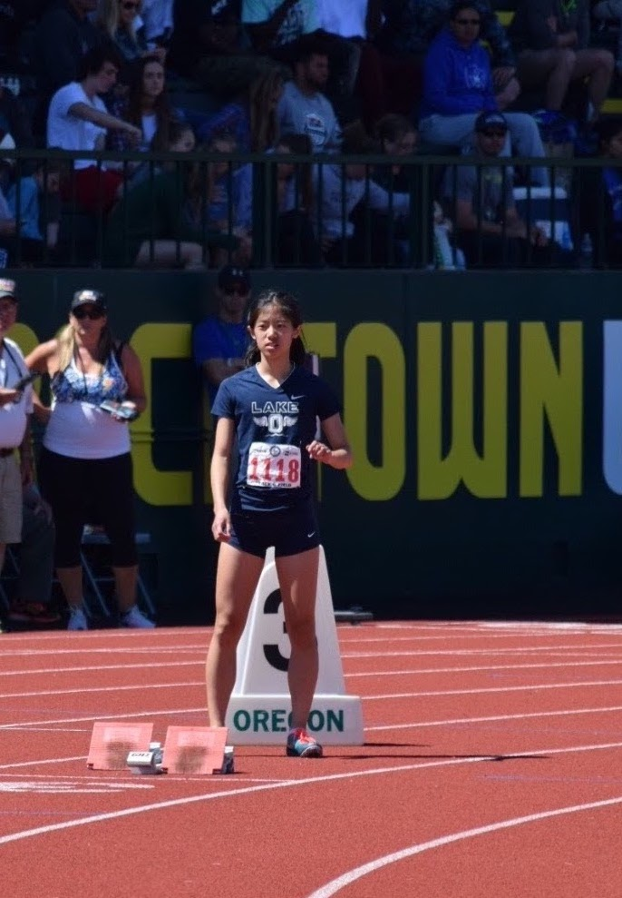
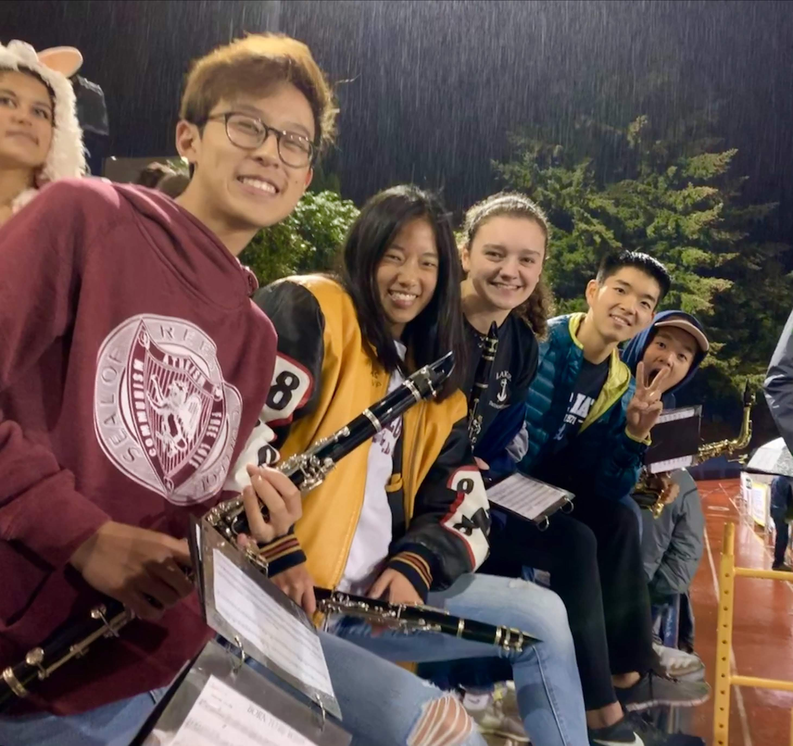

Hobbies
Some other things I enjoy doing and the evolving ways that I've continued to incorporate them into my life :)
SPORTS
I played soccer and sprinted (a few times at Hayward Field!) competitively for many years. In college, I tried to stay active by playing club soccer and intramural sports, and by pushing buggies through the streets of Pittsburgh!! Now I play soccer with friends in NYC, rock climb, and am slowly converting into more of a distance runner.


MUSIC
I grew up playing the piano and clarinet; in college, I started singing!